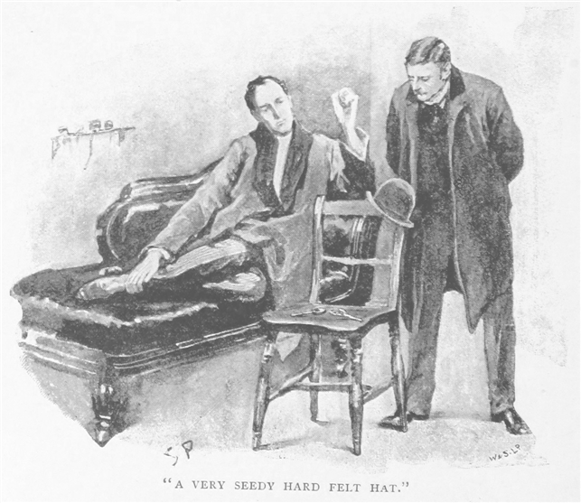
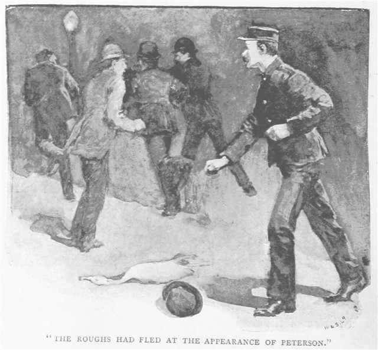
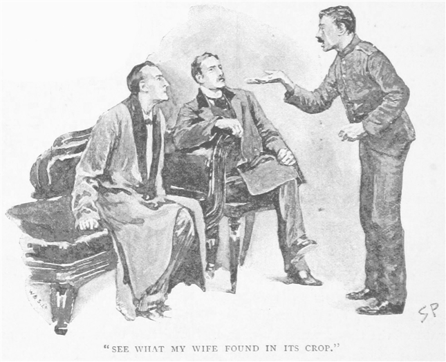
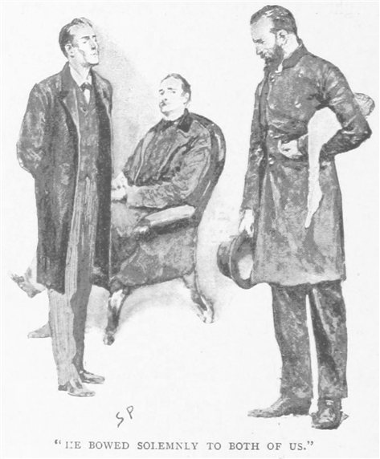
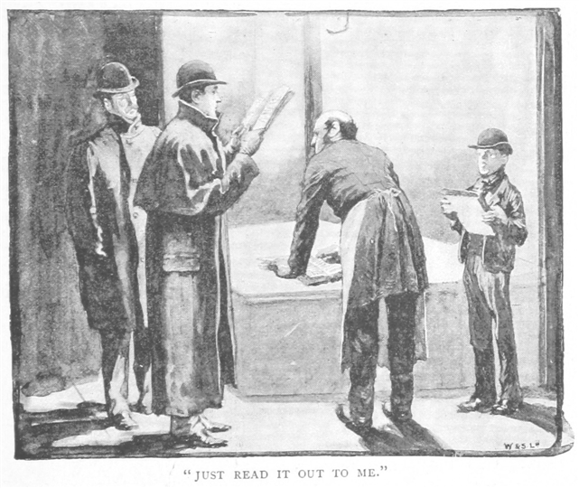
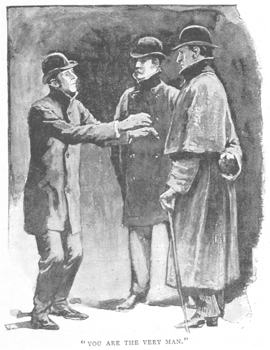
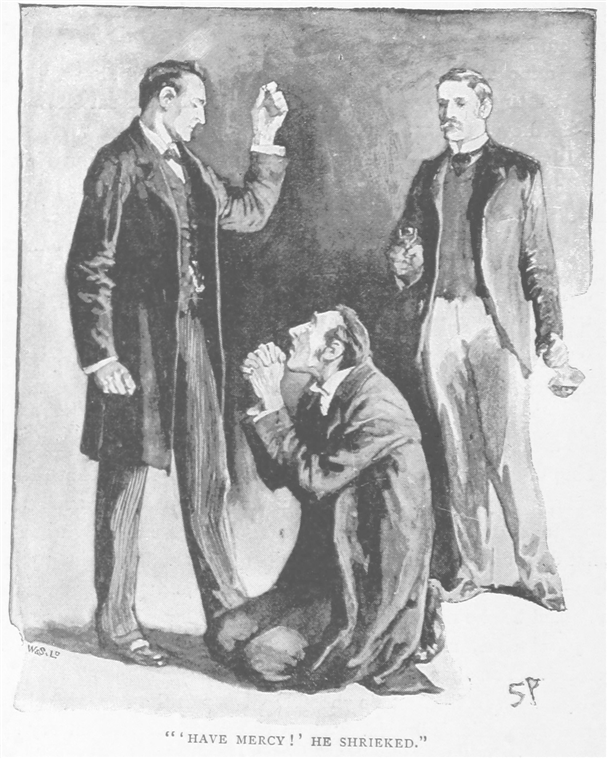

友人シャーロック・ホームズのもとを、私はクリスマスの二日後に訪れた。時候の挨拶をしようと思ったのだ。ホームズは紫の化粧着姿で、ソファにくつろいでいた。右手の届くところにパイプ置きがあり、今読んでいるところなのだろう、手元にはぐちゃりと朝刊の山が積まれている。ソファのそばには木の椅子があり、背の角にちょうど、趣味の悪い堅めのフェルト帽がひっかけられていた。ずいぶんくたびれていて、何ヶ所か破れてしまっている。座る場所に拡大鏡とピンセットがあったので、帽子がこんなふうにつるされているのは、何か調べるためなのだろう。
「仕事中か。」と私は言った。「お邪魔かね。」
「とんでもない。推理を聞いてくれる友人なら大歓迎だ。ほんの些細なことなのだが、」――ホームズは親指を使って、古い帽子の方を指し示す――「実際やってみると、まったくつまらんというわけでも、学ぶところがないわけでもない。」

私は肘掛椅子に座って、ぱちぱちと燃える火で手を温めた。外はひどく霜が降りていて、窓一面に氷の結晶が貼り付いている。「ということは、」と私は切り出す。「見た目はのほほんとしているが、こいつの裏には恐ろしい話が潜んでいるのか……だからこいつはその謎を解くための、罪を裁くための手がかりというわけだな。」
「いや、犯罪とは無関係だ。」とシャーロック・ホームズは笑い出す。「数マイル四方の空間のなかで四百万の人間が押し合いへし合いしているとふと起こってしまう、そんな気まぐれな小さな出来事のうちのたったひとつに過ぎない。大勢の人間が密集していれば、その作用と反作用のなかで、出来事はいかようにも組み合わさって、何ごとでも起こるものだ。犯罪には無関係なのに、奇抜で不思議な小さな事件というのは、いくらでも現れる。以前にもそういうことがあったね。」
「確かに。」と私は答えた。「備忘録に書き加えた直近の事件むっつのうち、みっつはいかなる法的犯罪とも無縁だった。」
「左様。今のみっつとは、アイリーン・アドラーから書類を奪還せんとした件、メアリ・サザランド嬢の奇天烈な事件、そしてねじれた唇の男をめぐる調査のことだが、さて、この小さな事件も、同じく無害な類に分けられるに相違ない。ピータソンは知っているね、便利屋の。」
「ああ。」
「この拾得物は彼のものだ。」
「彼の帽子か。」
「いや、見つけたのが彼だ。持ち主は分からない。こいつをひしゃげた帽子ではなく、知的な問題として考えてみたまえ。まずは、どのようにここへやってきたかだ。たどり着いたのはクリスマスの朝のことで、まるまると太った鵞鳥が一緒だった。まあ、その鵞鳥は今頃、ピータソンの家の暖炉の前で、あぶり焼きにされているに違いない。話はこうだ。クリスマスの日の午前四時頃、ピータソン――ご存じの通り正直者だが――彼がちょっとした宴会から家へ帰る途中、トテナム・コート通りにさしかかった。すると目の前に現れたのは、ガス灯に照らされた長身の男の姿。どうも歩みがまっすぐでなく、肩に白い鵞鳥を背負って運んでいた。だがグッジ街の角にたどり着いたところで、その見知らぬ男は数人の荒くれどもに絡まれてしまった。そのひとりが男の帽子を払ったので、男は身を守ろうと杖を振り上げたのだが、そのはずみで杖は頭の後ろまで行って、背にあった店の窓を壊してしまったのだ。ピータソンはその男を荒くれどもから守ろうと走り出した。しかし、男は窓を壊してあわててしまい、制服を着た男が迫ってきたので警官だと思ったのだろう、肩の鵞鳥を手から離して逃げ出してしまい、トテナム・コート通りの裏にある入り組んだ路地の方へ消えてしまった。相手もピータソンの姿を見て逃げ去り、ピータソンだけが喧嘩の現場に残されたのだが、同時に戦利品として、このひしゃげた帽子と、文句のつけようもないクリスマスの鵞鳥を一羽手に入れたというわけだ。」

「なら、持ち主に返したんだね？」
「どうもそれにも問題がある。実は、『ヘンリ・ベイカー夫人へ』と書かれた小さな厚紙が鵞鳥の左脚に結びつけてあったのだ。さらに、帽子の裏にも『Ｈ・Ｂ』という頭文字が読み取れた。ベイカーという姓など何千とあれば、ヘンリ・ベイカーも何百人とこの街にはいる。この拾得物をその中の誰かひとりに返すというのは、やさしい仕事ではない。」
「なら、ピータソンはどうしたんだね？」
「彼はクリスマスの朝に帽子と鵞鳥を持って、僕のところへ来た。僕がどんな小さな問題にでも興味を持つと知っているからね。鵞鳥も今朝まで手をつけずにいたが、霜も降りているとはいえ、見たところ、もうそろそろ食べなければどうしようもなくなってきた。だから拾い主に持って帰ってもらって、鵞鳥の使命をまっとうさせてやった。かたや僕は、クリスマスのごちそうを逃した見知らぬ紳士の帽子を持ち続けている。」
「落とし主の広告はなかったのか？」
「ああ。」
「誰か特定する手がかりはなかったのかね？」
「必要なだけ演繹すればいい。」
「この帽子から？」
「左様。」
「また冗談を。こんな古いひしゃげた帽子で何がわかる？」
「拡大鏡をあげよう。僕のやり方は知っているね。こんなふうに物を使い古す男というのは、いったいどういう人間なのか、君ならどう考える？」
私はそのひしゃげたものを手にとって、しまったと思いながらも裏返した。ごく普通の丸い形をした黒い帽子である。材質は堅く、ずいぶんくたびれていた。裏地は赤い絹でひどく色あせている。製造者の名前はなかったが、ホームズの言ったとおり、側面にＨ・Ｂという頭文字が縫い取られていた。つばの部分に帽子を固定するための穴があるもののゴムもない。あとは傷が多くどうも埃っぽいし、染みもいくつかある。だがそういう色の抜けたところもインクで上塗りして隠そうとはしているようだ。
「見えてこんな。」私は言って、帽子を我が友人へ差し戻す。
「とんでもない。ワトソン、君は見えてはいる。しかしながら、見えたものから推理できていない。推理を断定するだけの勇気がない。」
「君なら、この帽子から何が推理できるというのかね？」
ホームズは帽子を取り上げて、にらみつけた。いつも通り彼独特のうちに沈んだやり方だ。「それほど多くのことがわかるわけでもないが、」と前置きして、「はっきりと断定できることがいくつか、そして少なくとも可能性が極めて高いものもいくつかある。この男が高い知性を持っていることが、もちろん見ただけで明らかであるし、そのうえ男がこの三年間はかなり豊かであったが、今は財産も目減りしているということもわかる。以前はたしなみもあったが今はそれほどでもなく、品行も悪くなっている。酒など、仕事に若干の差し障りのあることをやっているかもしれぬというわけだ。とすればこれも、妻に愛想をつかされたという明白な事実の説明にはなろう。」
「おいおいホームズ！」
「だが自尊心はまだ少し残っている。」ホームズは私の抗議を無視して続ける。「普段は座ってばかりでほとんど外に出ない、運動はまったくしない、中年、灰色の髪、ここ数日のあいだに散髪、ライムの整髪剤を塗った。以上が、帽子から演繹可能な明瞭なる事実だ。なお余談だが、彼の自宅にガスが引かれている可能性はきわめて低いといえる。」
「からかっとるな、ホームズ。」
「いたって真面目だ。これだけ答えを言ったにもかかわらず、筋道が見えないとでも言うのかね。」
「自分の鈍さには自覚があるのだが、正直、今のにはついていくこともできん。たとえば、どう推理すれば、男に知性があるなどとわかるのかね？」
返事の代わりに、ホームズは帽子を頭にかぶる。額がすっかり隠れ、鼻柱のところで止まった。「容量の問題だ。」とホームズ。「脳の大きな人間なら、そこでそれなりのことができるに違いない。」
「落ちぶれているというのは？」
「この帽子は使い始めて三年。つばが平らにのびて、端で反っている。当時の流行だ。しかも最上級品の帽子だ。見たまえ、帯は綾絹で、裏地も見事だ。この男、三年前はかくも高価な帽子をあがなう余裕もあったが、それ以来ひとつも買っていないとすれば、落ちぶれているに違いない。」
「なるほど、それもそうだな。だが、たしなみと品行というのは？」
シャーロック・ホームズは笑った。「たしなみはここ。」と言って、帽子を固定するための小さな通し輪に指を当てる。「頼まないとこいつはついてこない。この男がそう注文したのなら、身だしなみに気を遣っていたことが見て取れる。あえて風の用心をしたのだから。ゴムがはずれても替える気も起きないとすれば、どう見ても、以前より気を遣わなくなったということであり、何よりも意志が弱くなっているという証拠でもある。他方、フェルト地についたいくつかの汚れを隠そうとしてインクを塗りつけている。自尊心をまったく失ったわけではないということが見て取れる。」
「確かにその推理なら納得できる。」
「次は、彼が中年で、髪は灰色、最近散髪してライムの整髪剤をつけた点だ。みな裏地の下部をつぶさに見ればわかる。拡大鏡を通すと、多数の髪の切れ端が見える。きれいな切り口だから、理容師のはさみによるものだ。いずれも粘着性があるようで、整髪剤からライムのすぅっとした匂いがする。またくっついているのも、街の黒ずんだ塵というよりは、屋内の茶色い埃。ほとんど一日中、室内にかけてあったということだ。一方で内側のしめったようなあとがあるから、着用者は相当の汗かきであり、滅多に運動しないと考えても問題なかろう。」
「しかし、奥さんが――奥さんに愛想をつかされたというのは？」
「この帽子は、もう何週間もブラシがかかっていない。たとえばね、ワトソンくん。僕が君の帽子を見て一週間分の埃がたまっていたとする。すると、君の御前さまは、君をそんななりで外に出しても気にならないということだから、僕は君が不憫にも御前さまに愛想をつかされたと考えざるをえない。」
「独身かもしれんではないか。」
「いいや、ご機嫌取りのつもりで鵞鳥を買って帰った。ほら、脚に厚紙があったと言ったろう？」
「何もかもお見通しだな。だが最後の、自宅にガスを引いていないとはどういうことだね？」
「獣脂の染みが、ひとつ、いやふたつでも、たまたまということがあろう。しかしいつつもあればだ、ほぼ疑いなく、その人物は火のついた獣脂を始終取り扱っている――夜中、上の階へあがるとき、片手に帽子、もう一方の手に揺らめく蝋燭。かどうかはわからぬが、ガス灯ではロウはつかんよ。満足したか？」
「ああ、うまいものだ。」と言って、私は笑う。「だがさっきも言ったように、犯罪もなく、まあ害と言えば鵞鳥を損したことくらいなら、こんなことをしても、どっちかというとやるだけ無駄のように思えるのだがね。」
シャーロック・ホームズが返事をしようと口を開いたそのとき、扉がさっと開き、便利屋のピータソンが部屋の中へ駆け込んできた。頬は真っ赤で、茫然自失の体だ。
「鵞鳥……ホームズさん！ 鵞鳥が！」と息を切らす。
「ん？ 鵞鳥が、何？ 生き返って台所の窓からパタパタと飛んでいったのか？」ホームズはソファの上で身体をねじらせ、男の興奮した顔をよく見ようとした。
「見てください！ 女房が

シャーロック・ホームズは口笛を吹いて座り直すと、「驚きだ、ピータソン！」と言った。「これこそまさしく埋〈臓〉金だ。自分が何を持ってきたのか、わかるね？」
「ダイヤモンドですか？ 宝石です、ガラスが石膏みたいに切れるあれですね。」
「それ以上のものだ。今、宝石といえばあれしかない。」
「まさかモーカー伯爵夫人の
「ご名答。大きさといい、形といい、『タイムズ』にここ毎日出ている広告の通りだ。世界にふたつとなく、その本当の価値は誰にもわからない。懸賞金の一〇〇〇ポンドも、その市場価値の二〇分の一にも及ばないだろう。」
「一〇〇〇ポンド！ こりゃ、たまげた！」便利屋は椅子にへたり込み、我々の顔を一人ずつ見据える。
「そう、懸賞金。だから気になってはいた。その裏には、心情面での深い事情がある。伯爵夫人が自分の財産の半分を出してまで、その宝石を取り戻したいと考えるほどの。」
「紛失か。私の記憶が確かなら、場所はホテル・コズモポリタン。」と私が口を挟む。
「左様、十二月二十二日、ちょうど五日前だ。配管工のジョン・ホーナが訴えられた。夫人の宝石箱から件の宝石をかすめ取ったかどでだ。不利な証拠の方が強かったため、この事件は巡回裁判に付された。この中に、その報道記事があったはずだが。」ホームズは新聞の山をかきまわしては、日付を素早く確かめていった。ようやくひとつを取り出すと、しわを伸ばしてから、ふたつに開き、次の記事を読み上げた。
ホテル・コズモポリタンで宝石盗難――モーカー伯爵夫人の宝石箱から蒼炎石の名で知られる貴重な宝石が盗難された事件で、二十二日、配管工ジョン・ホーナ容疑者（二六）が逮捕された。ホテルのジェイムズ・ライダー客室係長の証言では、事件当日、ホーナ容疑者をモーカー伯爵夫人の化粧室まで連れて行ったという。外れた二本目の火格子を修繕するためで、しばらく容疑者と一緒にいたが、呼ばれたため途中で退室。戻ったときには容疑者の姿はなく、衣装箪笥がこじ開けられており、モロッコ革の小箱が空のまま鏡台の上に放置されていた。伯爵夫人が普段から宝石を保管している箱だとは知らなかったものの、客室係長はすぐ通報、容疑者は同日晩に逮捕された。宝石は容疑者の身体からも部屋からもまだ見つかっていない。キャサリン・キューサック（伯爵夫人のメイド）は、窃盗に気づいた係長のうろたえた声が聞こえ、あわてて部屋に駆け込むと、室内は係長の証言通りの様子だった、と答えている。Ｂ管区のブラッドストリート警部によると、容疑者は逮捕の際、強く抵抗し大声で無罪を主張したという。容疑者に窃盗の前科があったため、治安判事は略式手続を許可せず、巡回裁判へ起訴。容疑者は法的手続のあいだ、極度の興奮を見せ、決定を聞いたのち気絶、裁判所の外へ運び出された。
「ふん！ 所詮、警察裁判所と言うべきか。」ホームズがやれやれと新聞を投げ捨てる。「僕らの今取り組むべき問題は、どのような道を経て、物色された宝石箱という始点から、トテナム・コート通りの鵞鳥の餌袋という終点に至ったかだ。ほら、ワトソン、僕らのささやかな演繹も、たちまち重要度が増し、そう無害でもなくなってきた。宝石がここにある。この石の出所は鵞鳥、そして鵞鳥の持ち主はヘンリ・ベイカー氏。あのひどい帽子を持ち、僕が君を退屈させたまさに張本人たる人物だ。さて、これから僕らはできるだけ慎重にせねばならぬ。この紳士を見つけ、このささやかな謎でどういう役回りを演じているのか確かめること。そのために、まずもっとも簡単な手段をとろう。わかるね、夕刊紙すべてに広告を出す。これで駄目なら、何か方法を考えよう。」
「文章は？」
「鉛筆とその紙の切れ端を頼む。そうだね、
グッジ通りの角で鵞鳥と黒のフェルト帽を拾得。ヘンリ・ベイカー氏へ同等品を返却希望。今晩六時半にベイカー街２２１Ｂへ参上されたし。
簡にして要だ。」
「なるほど。さて読むかな？」
「ああ、間違いなく新聞に目をこらしている。貧乏人にとって、この損失は大きかった。誤って窓を割ってしまったときも、ピータソンが近づいてきたときも、相当おびえきっていた。それはつまり、逃げることしか頭になかったということだ。だがそのあと、とっさに鳥を落としてしまったことをひどく悔やんでいるに相違ない。それに名前を入れておけば間違いない。知り合いの誰かが本人に教えてくれるだろう。さあ、ピータソン、広告代理店へ急いで、夕刊にこいつを入れてもらうんだ。」
「どの新聞です？」
「そう、グローブ、スター、ペル・メル、セント・ジェームジズ、イヴニング・ニューズ・スタンダード、エコー、あとは君の思いつく限りの新聞へ。」
「承知しました。あと、この宝石は？」
「そうだね、預かっておこう。ありがとう。あとひとつ、ピーターソン、ちょっと帰り道で鵞鳥を買って、ここへ置きにきてくれないか。その紳士へ返す鵞鳥が要る。元のは今頃、君の家のごちそうになっているから。」
便利屋が退室すると、ホームズは宝石を取り上げ、光にかざして見せた。「麗しい。」と言葉が出る。「見たまえ、この輝き、この
「ホーナというこの男は無実かな？」
「どうだろう。」
「なら、もうひとりの男、ヘンリ・ベイカーがこの件に関与していると？」
「僕の考えでは、ヘンリ・ベイカーはまったく無実である可能性の方がずっと高い。運んでいた鳥が、同じ大きさの金塊よりもすこぶる価値があろうとは、思ってもいなかっただろう。だがそれでも、ごく簡単に試して見定めることになる。広告に応じてきた場合は。」
「そのときまで、君にもできることはなしか。」
「ない。」
「なら、私は私で、一回り往診をしてくるよ。だが今晩、君の指定した時刻までには必ず戻ってくる。これほどもつれた事件だ、解決をぜひとも見たい。」
「来てくれてありがとう。僕は七時に晩餐だ。
私はある患者に手間取り、六時半を少し過ぎてようやくベイカー街へ舞い戻った。家に近づいていくと、長身の男が目に入った。スコッチ帽をかぶり、外套は顎のところまで釦を留めていた。採光窓から漏れ出る半円形の明かりの下、外で何かを待っている。私が到着すると同時に戸が開けられ、その男と私は一緒にホームズの部屋に通された。
「ヘンリ・ベイカーさん、ですね。」ホームズは肘掛椅子から立ち上がり、うち解けた暖かい調子でその訪問客を迎えた。男もすぐに落ち着いたようだ。「さあ、椅子を暖炉にお寄せください、ベイカーさん。今夜は冷えます、あなたの場合、血の巡りは冬よりも夏の方がずっといいでしょう。ああ、ワトソン、ちょうどいい時機に来た。こちらはあなたの帽子ですか、ベイカーさん？」
「ええ、間違いなく私のものですな。」
ベイカー氏はなで肩の大男で、頭も大きかった。広い額は知性を感じさせ、そこからくすんだ茶色い
「数日のあいだ、お預かりしておりました。」とホームズが言う。「あなたから住所を知らせる広告が出るとばかり思っておりましたので。弱りました、道理でお出しにならないわけです。」
我々の訪問客は、気恥ずかしそうに笑う。「銀貨は、かつてほど私にまわってこなくなりました。」と男が述べる。
「てっきり、私を襲った荒くれ者の一団が、帽子と鳥を持ち去ったのだと思っておりました。帰ってくる見込みのないものに、あまりお金を費やしたくなかったのです。」
「ごく当然のことです。時に鳥のことですが、あれは食べるしかありませんでした。」
「食べたですと！」我々の訪問客は、興奮のあまり椅子から腰を浮かせる。
「ええ、そうしないと、鳥も無駄になるだけでしたので。ですが、よろしければ、別の鵞鳥がそこの食器棚にあります。だいたい同じ重さでごく新しいものですから、それで代わりにはならないでしょうか？」
「ああ、じゅうぶん、じゅうぶんです。」とベイカー氏はほっと息をつく。
「もちろん、まだ元の鳥から羽も脚も餌袋も何も残っておりますから、ご希望でしたら――」
いきなり男は朗らかに笑い始める。「事件の記念に、というのは確かに面白いですが、詩人の言うように、そういう用途以外に、亡き旧友の〈肉片〉なるものはどう扱ってよいかわかりませんからな。結構です、ご迷惑でなければ、あそこの食器棚に見える見事な鳥だけということにしたいと思うのですが。」
シャーロック・ホームズは、わずかにふるえる男の肩越しに、私へ向かって鋭い視線をちらと送ってきた。
「あなたの帽子と、それから、これがあなたの鳥になります。」とホームズ。「時に、ご面倒でなければ、あの鵞鳥はどこでお求めになったか教えていただけませんか？ 私も鶏肉には目がないのですが、あんなに育ちのよい鳥はそうお目にかかれません。」

「その通りですな。」ベイカー氏は立ち上がって、新しく手に入れたごちそうを小脇に抱えていた。「私は、博物館のそばにあるアルファ・インの数少ない常連なのですが……ええ、日のあるうちに博物館へ行けば、だいたいそのうちの誰かがおりますよ。今年はそこの気のいい亭主が――ウィンディゲイトというのですが――鵞鳥の同好会を作りまして、毎週数ペニーずつ積み立てると、クリスマスにひとり一羽、鳥がいただけるのです。私はきっちり払っておりましたから、あとはご存じの通りです。本当に恩に着ます。この年で、この性格ですから、スコッチ帽はどうも不似合いで。」滑稽なほど仰々しい仕草で、我々ひとりひとりに深々とお辞儀をし、そしてしっかりとした足取りで出て行った。
「ヘンリ・ベイカー氏はこういう人物だ。」とホームズは後ろ手で戸を閉める。「間違いない、彼はこの一件については何も知らない。空腹かね、ワトソン？」
「いや別に。」
「ならばこうしよう。晩餐を夜食に換えて、この手がかりをまだ冷めぬうちに追いかけよう。」
「よしきた。」
その夜は肌を刺すような寒さで、我々はアルスターを着込み、首巻きでのどをくるんだ。外では、星が冴え冴えと輝き、空には雲ひとつない。街を歩く人の息は、弾を打った後の銃口のように、あちこちから白く吹き上がる。我々は足音をこつこつとあたりに響きわたらせつつ、医者の街であるウィンポール街とハーリィ街を抜け、そのあとウィグモー街からオックスフォード街へ入った。十五分後、我々はブルームズベリにあるアルファ・インの前にいた。通りの角にある小さなパブで、その通りを進むとホウボーンに至るのだろう。ホームズは戸を押して個室の方へ入り、ビールを二杯、赤ら顔で白いエプロンの亭主に注文した。
「このビールが、ここの鵞鳥と同じくらい上物なら、言うことなしだ。」とホームズ。
「ここの鵞鳥！」亭主は驚いた様子だ。
「ああ。つい半時間前、ヘンリ・ベイカーさんと話してね。おたくの鵞鳥同好会の一員だとか。」
「おお、なるほど。いや旦那、ありゃうちの鵞鳥じゃないんですよ。」
「えっ！ ではどこの？」
「コヴェント・ガーデンの売り子から二ダース卸してもらったんです。」
「本当に？ 知り合いもいる。どいつだい？」
「ブレッキンリッジっつったかな。」
「ほう！ 初耳だな。では、オヤジの健康と、この店の繁栄に乾杯だ。ごきげんよう。
さあ、ブレッキンリッジ氏の方へ。」ホームズは外套の釦を留めながら、霜風の吹く戸外へ出て、言葉を続ける。「いいかい、ワトソン。我々は確かに鎖の一端として、鵞鳥などというのほほんとしたものを扱っている。しかし、もう一方の端には、我々が無実を証明せねば七年の懲役刑を受けるかもしれぬ男がいるのだ。この調査で有罪を確定する可能性もあるが、いずれにせよ、警察も見逃した捜査の糸口をつかんでいる。偶然舞い込んできたものであるにしても。ならば果ての果てまで追いかけよう。南向け南、早足で歩け！」
我々はホウボーンを通り過ぎてエンドル街へ入り、入り組んだ貧民街を抜けると、コヴェント・ガーデン市場へ出た。露店の中でも大きいもののひとつに、ブレッキンリッジの名が掲げられていた。そこの持ち主は、角張った顔に整えられた頬髭、どこか馬好きの雰囲気があり、手伝いの少年と一緒に店じまいをしているところだった。
「こんばんは。冷えるね。」とホームズが言った。
売り子はうなずき、我が友人を疑わしげにちらりと見た。
「どうも鵞鳥は売り切れかな。」ホームズは言葉を続け、何もない大理石の台を指さした。
「明日の朝なら五百は大丈夫ですぜ。」
「弱ったな。」
「まあ、あのガス灯のついてる店にはまだある。」
「おたくを薦められたんだ。」
「どいつに？」
「アルファの主人だ。」
「ああ、二ダース持ってったな。」
「あれも素晴らしい鳥だった。仕入れ先はどこかね？」
驚いたことに、この質問がいきなり売り子の怒りを買ってしまった。
「そういうことかい、旦那。」と売り子は頭を振り上げ、手を腰に当てて肘を張る。「どういう魂胆だ。はっきり言ってもらおうじゃねえか。」
「はっきり言っている。アルファに卸した鵞鳥は、どこから仕入れたのか知りたい。」
「なら言えねえな。ほら行った！」
「まあ、つまらんことではないか。どうしてそんな些細なことでかっかする。」
「かっか！ そりゃかっかもするわ、俺の気持ちになってみろっつんだ。それだけの品にそれだけの金を払う、これで取引は終わりなんだよ。なのに『どこの鵞鳥だ？』だの『鵞鳥を誰に売った？』だの『鵞鳥をいくらで売った？』鵞鳥はここだけにあるんじゃねえやい、騒がしいったらありゃしねえ。」
「いやいや、僕はそんな質問をした御仁とは無関係だ。」とホームズは軽く言った。「ただ教えてくれないと賭が成立しない、それだけの話だ。いつも鳥のことで賭をしているのだが、五ポンド賭けていい、僕の食べた鳥は、田舎育ちだ。」
「へえ、ならその五ポンドはおじゃんだな。ありゃ街の育ちだ。」と売り子がぶっきらぼうに言う。
「そのはずはない。」
「卸の言葉だぜ。」
「信用できないね。」
「俺より鳥に詳しいってのかい。俺はガキんころからこいつらを世話してるんだぜ？ いいか、アルファんとこに行った鳥は、みんな街の育ちだ。」
「納得できるだけの証拠がないではないか。」
「なら賭けるか？」
「金の無駄だ。僕が正しいに決まってる。だが、
売り子はいやみたらしくほくそ笑んだ。「帳簿持ってこい、ビル。」
そう言うと少年が裏に回って、厚みのない小型の帳面と背が脂で汚れた大型の帳面を持ってきて、つるされたランプの下にまとめて置いた。
「さあ、うぬぼれ屋の旦那。」と売り子がしゃべり出す。「
「ん？」
「こいつは仕入れ先の一覧だ。わかるか？ あれだ、この頁のここが田舎のやつらで、名前のあとにある数字が、大きい台帳で詳しく書いてある頁になる。それから！ こっちの頁の赤い字が見えるな？ そう、これがこの街にある仕入れ先の一覧だ。ほら、三つ目の名前を見てみろ。ちょっと読んでみろや。」
「オウクショット夫人、ブリクストン通り１１７――２４９。」とホームズが読む。

「そうだな。じゃあそいつを台帳で繰ってみろやい。」
ホームズは指定された頁をめくった。「ここか。『オウクショット夫人、ブリクストン通り１１７、卵・鳥肉仕入れ先。」
「で、最後の記帳にゃあどうあるかね？」
「『十二月二十二日 鵞鳥二四羽 七シリング六ペンス』」
「そうだ。言った通りだ。その下は？」
「『アルファのウィンディゲイト氏に卸 十二シリング』」
「何か言うこたああるかな？」
シャーロック・ホームズはひどく悔しそうなふりをした。懐からソヴリン金貨を一枚取り出して、石の台へ投げた。そして言葉にならぬほど不機嫌になった男、といった体で背を向ける。二、三ヤード離れた街灯の下でホームズは立ち止まり、心の底から笑い出した。ホームズ独特の、音を立てない笑い方だ。
「鬚をあんなふうに整え、懐から赤新聞をのぞかせている男なら、絶対、賭でつれる。」とホームズ。「ああいう男は、たとえ一〇〇ポンド積んだとしても今見たく教えてはくれまい、と言っても過言ではない。賭の相手をしてやれば引き出せるのだ。さあワトソン、どうやら僕らの冒険も終わりに近づいてきた。まだ決まらぬ点はただひとつ、今夜のうちにオウクショット夫人のところへ行くべきか、それとも明日までおあずけにしておくかだ。逆にはっきりしているのは、あの男が無愛想に対応したことからも、僕ら以外の誰かが同じことを気にしているということだから、もうここは――」
ホームズの言葉が唐突に途切れた。ちょうど今離れたばかりのあの露店から、怒鳴り散らす声が聞こえたのだ。振り返ってみると、鼠のような顔をした小柄な男が、揺れるランプから射す黄色い光の真ん中に立ちすくんでいた。あの売り子のブレッキンリッジは露店の戸の前に突っ立って、すくむ男に対して拳をいかめしく振り上げている。
「てめえも鵞鳥ももうたくさんだ。」と売り子がどなる。「てめえらまとめて地獄に堕ちやがれ。今度そんなくだらねえ話をしにきやがったら、犬をけしかけるぞ。オウクショットのかみさんを連れてこい。かみさんになら話してやる。けどな、あんたにゃかかわりねえ。おれはてめえから鵞鳥を買ったんじゃねえんだ。」
「そ、そうですが、でも、ひとつは私のもので……」小柄な男が訴えるように言う。
「なら、オウクショットのかみさんに聞けやい。」
「あの人はあんたに言えって。」
「はあ？ プロイセンの王さんにでも言え。知ったことか。もうたくさんだ。けぇれ！ けぇれ！」売り子が勢いよく前へ飛び出たので、訪ね来た男はそそくさと闇の中へ消えていった。
「ほう！ ブリクストン通りへ行かずにすむかもしれぬ。」とホームズがささやく。「ついて来たまえ。あの男がいったい何やつか確かめよう。」明かりのついた露店街を思い思いに歩く人混みを縫って、我が友人はすっとその小柄な男に追いつき、肩に触れた。男がはっと振り返る。ガス灯に照らされた男の顔から、すべての色が跡形もなく消えていくのが見えた。
「えっ、誰、ですか？ なんでしょう？」男は声を震わせる。
「失敬。」ホームズの穏やかな声。「その、耳に挟んだものですから。さきほどあの売り子に何か訊いておいでで。ならば、お役に立てるかと思いまして。」
「あなたが？ 何者です？ どうしてそのことを知ってるんですか？」
「僕の名前はシャーロック・ホームズ。他人の知らぬことを知るのが仕事です。」
「いったい何を知っているというんです？」
「恐縮ですが、何もかも。あなたは数羽の鵞鳥を必死で探している。ブリクストン通りのオウクショット夫人から出荷され、ブレッキンリッジという名の売り子に渡り、そこからアルファのウィンディゲイト氏へ、さらにそこからヘンリ・ベイカー氏も一員である同好会へと渡った鵞鳥を、ね。」
「ああ、あなたのような人に会いたかったんです。」と小柄な男は声を上げて、両手を前へ突き出し、指をふるわせる。「言いようもありません。私は、それが気になって気になって仕方ないのです。」

シャーロック・ホームズは、通りすがりの四輪馬車を呼び止めた。「それならば、くつろいだ部屋でお話ししましょう。こんな吹きさらしの市場では何ですから。その前におうかがいしたいのですが、せっかくお力添えするのですから、お名前を。」
男は一瞬ためらった。「名前は、ジョン・ロビンソンといいます。」と答えながら、目をわきへそらす。
「いえいえ、本当のお名前を。」とホームズはにこやかに言う。「偽名での取引は、どうにも厄介ですから。」
男の白い頬がさっと真っ赤になる。「そうですね。」と男は言う。「本当は、ジェイムズ・ライダーといいます。」
「左様。ホテル・コズモポリタンの客室係長。馬車へお上がりください。すぐお話しして差し上げましょう。あなたの知りたいことすべてを。」
その小柄な男は、我々の一方から一方へ、おびえ半分、期待半分の目を向ける。めぐってきたのは幸運なのか破滅なのか、はかりかねている人というふうに見えた。そして男は馬車に乗り込み、三十分後、我々はベイカー街の居間へと戻っていた。馬車に揺られている間は誰も一言もなく、ただこの新しい連れのぜえはあという呼吸と、もぞもぞする手の動きが男の緊張を伝えるだけだった。
「到着！」とホームズが声を張り上げて、我々はぞろぞろと部屋へ入った。「外がこうでは、暖炉がいちばんです。冷えますか、ライダーさん。どうぞ柳の肘掛椅子へ。今スリッパを履きますから、そのあと、あなたのささやかな問題を解決しましょう。うむ、よし！ あなたは、あの数羽の鵞鳥がどうなったのかお知りになりたい？」
「そうです。」
「というよりは、そう、たった一羽だけ、でしょう？ 気になるのは。……体は白く、尾に一本黒の横線がある。」
ライダーはわなわなと震え、「そうです。」と声を絞る。「あれがどこへ行ったのか教えてください。」
「ここへ来ました。」
「ここへ？」
「ええ、たいへん申し分のない鳥でした。道理で、あなたが感心をお持ちになるはずです。何せ卵を産んだんです。死んだ後に。……あれほど麗しく、神々しい蒼い卵は見たことがありません。この我が美術館の中にあります。」
我らの訪問客は、足がふらつき、右手でマントルピースをつかむ。ホームズは自分の金庫の錠を開けて、蒼炎石を高く掲げた。星のように光を放ち、その輝きは冷たく、燦爛として四方八方へ刺さるようだ。ライダーは引きつった顔をして、石をにらみつけたまま立ちつくす。言おうか言うまいか、決めかねるというように。
「それまでだ、ライダー。」ホームズの静かな声。「足下をしっかり、でないと暖炉に落ちるぞ！ 腕を取って椅子へ、ワトソン。どうも血の気の足りない男だ、とても重罪などやり抜けられまい。少々ブランデイを与えたまえ。うむ！ 人間らしくなってきた。
しばらくふらふらとし、倒れんばかりであったが、ブランデイが効いて頬に色味が戻ってきた。男は座りながら、おびえた目でその告発人をじっと見つめる。
「事件の筋はおおよそ把握できている。おそらく必要なだけの証拠もすべて揃っている。だから何も話さずとも結構。ただ、若干のことをはっきりさせて、全容を明らかにした方がいいだろう。知っているな、ライダー、この青い宝石はモーカー伯爵夫人のものだ。」
「キャサリン・キューサック――彼女が教えてくれました。」と男はうわずった声で言う。
「なるほど、令夫人付きのメイドか。さて突然、財産がやすやすと手に入るという誘惑がもたげたとき、君は我慢ができなかった。君以上の善人でさえ無理な話だ。だが、実際のやり口は周到ではなかったな。見たところ、ライダー、君の中には立派な悪党がいて、そいつがやったらしい。君は知っていた。ホーナという配管工の男が以前盗みをやっていたことを。そして疑いがすぐさま彼の方に強く向けられるということを。そこで何をしたか？ 令夫人の部屋にちょっとした細工をした君は――いや君と共謀者のキューサックは――彼をその部屋へ行くように仕向けた。そのあと、彼が立ち去ると、君は宝石箱を物色し、通報、この不幸な男を逮捕させた。そして――」
いきなりライダーは敷物にひざまずき、我が友人の膝をつかむ。「お願いです、ご勘弁を！」それはうめき声だった。「私の父が！ 母が！ 心を痛めます。ほんの出来心だったんです！ 二度としません。誓います、聖書に誓います。だから警察だけは！ お願いですから！」

「椅子に戻りたまえ！」ホームズが言いつけた。「今更恐れをなして、はいつくばるのもたいへん結構、だが少しでも考えたことがあるか、覚えのない罪のために、哀れホーナは被告席に立つのだと。」
「高飛びします、ホームズさん。この国を出ます。それであいつの告訴はなしでしょう？」
「ほう！ それはあとでだ。まず僕らに、次にどうしたか正直に話せ。なぜ宝石が鵞鳥の中に入ったのか、そしてなぜ鵞鳥が表の市場に出たのか？ 嘘誤りなく話すんだ。そこだけに助かる唯一の望みがある。」
ライダーは乾ききった唇の上で舌を動かす。「ありのままにお話しします。ホーナが逮捕されたとき、思いました。この宝石を持ってすぐに逃げた方が得策だ。いつ警察が私の身体を探ったり、家捜しをするか分かったもんじゃない。ホテルではどこにも安全なところがありません。用ができたと見せかけて、外へ出て、姉のうちへと向かいました。姉はオウクショットという男と結婚して、ブリクストン通りに住んでいました。そこで市場へ出すための鳥を飼育しているんです。道中、会う人会う人みんな、お巡りやデカに見えました。とにかく寒い夜でしたが、顔なんかもう汗だらけになって、ようやくブリクストン通りにつきました。姉はどうしたの、どうして顔色が悪いの、と訊ねてきましたが、私はホテルで宝石泥棒があったからあわててるんだ、と答えました。それから私は裏庭に回って、パイプを吹かしました。何をすればいちばんいいのやら、わかりません。
かつてモーズリィと呼んでいた友人がおります。その男は悪の道へ走り、先日までペントンヴィルで服役していました。いつか会ったときに、盗みの技やら、盗んだものをどう捌くか話をしたことがあります。私には嘘をつかない男だとわかっていました、やつのことはちっとばかり知っていますからね。ですから、私は彼の住むキルバーンに行って、あらいざらい話すことにしました。あいつなら宝石を金に換える方法を教えてくれるでしょう。しかしうまくたどり着けるか分かりません。ホテルから出るだけでどれだけしんどかったか、思い出したんです。いつ何時つかまって調べられるかも知れず、なお宝石は
姉が何週間か前に言ってたんです。クリスマス・プレゼントにここの鵞鳥を一羽選んでもいいわよ、と。姉は約束を絶対に守る人でした。ここで自分の鵞鳥を選べば、その中に入れて宝石をキルバーンまで運べる。庭に小さな納屋があって、その裏へ一羽を追い立てました。ぶくぶくした白いやつで、尾に縞のあるやつです。そいつを捕まえて、くちばしを押し開け、宝石を指の伸びる限りできるだけ
『いったいあの鳥をどうしたのさ、ジェム？』と姉が言ったので、私は、
『いや、クリスマスに一羽くれるって言ったじゃないか。だからどれが丸々としてるかなって。』
すると姉は『ああ、あんたのはもう別に取ってあるよ。ジェムズバードって名付けてね。向こうにいる白いでかいのさ。あそこに二六羽いるけど、ひとつはあんたので、ひとつはあたし、あとの二ダースは市場用さ。』と言いました。
私が、『うれしいよ、マギィ姉さん。でも、姉さんにはみんな同じなんだろうけど、おれはさっきさわってたあいつの方がいいんだよ。』
そう言うと、『あれは他のより三ポンドも目方があるんだよ。あんたのために特別太らせたってのに。』と姉が返しました。
『まあまあ、あれでいいんだ。じゃあ今持ってくよ。』と私が言うと、
『お好きにおし。で、欲しいのはどれなんだい？』と、ぷんすかしながら、少し怒り気味に言われました。
『白くて、尾に縞のあるやつだよ。群れの真ん中にいる。』
『まあ、なかなかね。絞めるから、持ってきな。』
そこで私は言う通りにしました、ホームズさん。そしてその鳥をはるばるキルバーンまで運びました。友人に事の次第を話したんですが、あいつはこういうことを話すにはうってつけのやつなんですよ。やつは笑って、むせかえりました。私たちはナイフを取って、鵞鳥の腹を開きました。胸がつぶれそうでしたよ、宝石の影も形もないんです。はっと、どこかで間違えたのだと思いました。鳥をそのままにして、急いで姉のもとへ戻り、裏庭に飛び込みました。でももう鳥はどこにもいません。
『ここにいたのはどうしたんだ、マギィ姉さん？』と叫びました。
『問屋に出したけど、ジェム。』
『どの問屋だい？』
『コヴェント・ガーデンのブレッキンリッジだよ。』
『まさか、もう一羽、尾に縞のあるやつがいたか？ 持ってったのと同じような？』と訊きました。
『いたねぇ、ジェム。尾が縞のは二羽いたよ。あたしでも見分けがつかないね。』
そんなわけで、なるほど合点がゆきました。そして全速力でそのブレッキンリッジという男のところへ急ぎました。でもたちまち全部完売で、どこへ売ったかも何も教えてくれません。今晩あなたもあの男から話を聞きましたね。そうです、いつもあの調子で。姉は私がおかしくなったと思っています。ときどき自分でもそうじゃないかと思います。ええ、もう……もう私は、私には泥棒の烙印が押されてるんです。結局宝も手に入ってないのに、そのために人の心を売ってしまいました。ああ天の主よ！ お救いください！」おもむろに男はすすり泣きを始めて、顔を両手で覆うのだった。

長い沈黙が流れた。聞こえるのは、男の深い呼吸と、シャーロック・ホームズが指先で机の隅を定期的にこつこつと叩く音だけ。しばらくして我が友人は立ち上がり、扉を開け放した。
「失せろ！」とホームズが言う。
「ええっ！ あ、ありがとうございます！」
「何も言うな。失せろ！」
何も言う必要はなかった。そそくさ、階段をととととと、戸口をばたん、そして通りからどたばたという駆け足の音。
「つまるところ、ワトソン。」ホームズが手を伸ばして陶製のパイプをつかむ。「僕は警察の尻ぬぐいに雇われているわけではない。ホーナが窮地にあるなら話は別だが、あの男が出廷してホーナに不利な証言をすることはあるまいし、よって立証も不可能になるしかない。どうも勝手に減刑をしてしまったようだが、それで人の魂を救うということも、まあありうる。あの男は今後まっとうに生きるだろう。まったく、あれはおびえすぎだ。牢にぶち込もうものなら、やつは死ぬまで罪に囚われ続ける。それに、今は赦しの季節だ。偶然から僕らは、気まぐれで不思議な事件に出会えたわけで、そいつを解決できたのだから、僕としては上々だ。もし面倒でなければ呼び鈴を鳴らしてくれないか、博士。もうひとつ調査と行こう。次も、鳥が第一の問題だよ。」